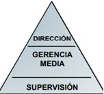

La ADMINISTRACIÓN es la disciplina que estudia los procesos productivos con el fin de generar la mayor eficiencia y eficacia del trabajo humano posibles, para obtener los mejores beneficios en relación con los recursos disponibles: financieros, tecnológicos, materiales y humanos.
EFICACIA Es el cumplimiento de objetivos.
EFICIENCIA Alcanzar los objetivos con la menor cantidad de recursos.
Es un proceso que consiste en las actividades de planeación, organización, dirección y control para alcanzar los objetivos establecidos utilizando para ellos recursos económicos, humanos, materiales y técnicos a través de herramientas y técnicas sistematizadas.
Planeamiento
Es el proceso de enunciar anticipadamente lo que se ha de hacer, como hacerlo, cuando y quien ha de hacerlo.
Es un proceso analítico que incluye la estimación del futuro, la determinación de objetivos deseados en el contexto del futuro, el trazo de cursos de acción alternativos para alcanzar los objetivos y la elección de uno o varios cursos de acción.
Propósitos del planeamiento:
• Evaluar las diferentes alternativas y selecciona la que permite Maximizar los resultados y minimizar las restricciones.
• Permite fijar y alcanzar los objetivos.
• Es el mejor seguro frente a la incertidumbre.
• Permitir a la gerencia dirigir los esfuerzos de la organización.
• Existen distintos grados de planificación, de acuerdo al nivel donde se aplique.
• El plan se ajusta a las condiciones cambiantes del medio en el que actúa la organización.
La Dirección
Es un proceso que se desarrolla en los diferentes niveles de la organización y tiene como objetivo lograr los fines y objetivos a través de las personas
Dinamiza y pone en marcha la empresa.
La Dirección necesita comunicación, liderazgo y motivación de las personas.
Es importante porque:
• Pone en marcha todos los lineamientos establecidos durante la planeación y la organización.
• A través de ella se logran las formas de conducta más deseables en los miembros de la estructura organizacional y es determinante en la productividad.
• Su calidad se refleja en el logro de los objetivos, la implementación de métodos de organización, y en la eficacia de los sistemas de control.
• A través de ella se establece la comunicación necesaria para que la organización funcione.
La Organización
Organizar es agrupar las actividades necesarias para alcanzar ciertos objetivos, asignar a cada grupo un administrador con autoridad necesaria para supervisarlo y coordinar tanto en sentido horizontal como vertical toda la estructura de la empresa (Koontz & O´Donnell)
El Control
El control consiste en comprobar o verificar que lo que sé esté haciendo asegure el progreso de las actividades planificadas para lograr el objetivo definido, con un mínimo de desviaciones o, preferentemente, sin ellas.
Es común que se presenten desvíos, contradicciones, errores de concepto o fallas en la comunicación que demanden acciones correctivas con la mayor celeridad posible.
Importancia del control:
1- Establece medidas para corregir las actividades, de tal forma que se alcancen los planes exitosamente.
2- Se aplica a todo: a las cosas, a las personas, y a los actos.
3- Determina y analiza rápidamente las causas que pueden originar desviaciones, para que no se vuelvan a presentar en el futuro.
4- Localiza a los sectores responsables de la administración, desde el momento en el que se establecen medidas correctivas.
5- Proporciona información acerca de la situación de la ejecución de los planes, sirviendo como fundamento al reiniciarse el proceso de planeación.
6- Reduce costos y ahorra tiempo al evitar errores.
El Control como sistema de retroalimentación
El control gerencial es, en esencia, el mismo proceso de control básico que se encuentra en los sistemas físicos, biológicos y sociales. Muchos sistemas se autocontrolan mediante la realimentación de información que muestra las desviaciones de los estándares e inicia los cambios; en otras palabras los sistemas utilizan parte de su energía para realimentar información que compara el desempeño con un estándar e inicia una acción correctiva.
Organización
Sistema social o conjunto de personas en relación de interdependencia para alcanzar determinados fines (producción de bienes y servicios).
Sistema socio-técnico incluido en otro más amplio que es la sociedad con la que interactúa influyéndose mutuamente.
Sistema social, integrado por individuos y grupos de trabajo que responden a una determinada estructura y dentro de un contexto al que controla parcialmente, desarrollan actividades aplicando recursos en pos de ciertos valores comunes.
Concepto de organización
• Forman parte de la Sociedad.
• Todas las actividades de relacionadas con la producción de bienes y servicios, las planean, coordinan, dirigen y controlan las organizaciones.
• Están compuestas por personas y recursos físicos, financieros y tecnológicos.
• Son heterogéneas y diversas cuyas características, estructuras y objetivos son diferentes.
• A través de la Administración las Organizaciones pueden existir y crecer.
• Las organizaciones están dirigidas por Administradores o Gerentes.
• No se consideran organizaciones a los grupos de amigos, grupos de familiares.
Las organizaciones se diferencian de otros grupos en función de lo siguiente:
1) División del trabajo, del poder y las responsabilidades y de las comunicaciones, divisiones que han sido planeadas para favorecer la realización de fines específicos.
2) Presencia de uno o más centros de poder que controlan los esfuerzos concentrados de la organización y los dirigen hacia sus fines, estos centros de poder, además, revisan continuamente la actuación de la organización, remodelan su estructura, donde es necesario, para aumentar su eficiencia.
3) Sustitución del personal, es decir que las personas cuyo desempeño no satisface pueden ser reemplazadas y sus tareas asignadas a otras.
Clasificación de las organizaciones:
A) LUCRATIVAS
1. POR LA RAMA DE LA ACTIVIDAD (Servicios)
2. POR EL TAMAÑO (unipersonal, microempresas, pequeñas empresas, medianas empresas y grandes empresas)
3. POR EL ALCANCE DEL MERCADO (Local, regional, nacional e internacional)
4. POR EL ORIGEN DE CAPITAL (Privado, publico y mixto)
B) NO LUCRATIVAS (Iglesia, municipios, ONG)
Concepto de Empresa
• Es el mecanismo de abastecimiento de bienes y servicios que hace posible la vida civilizada.
• Es un sistema que interacciona con su entorno materializando una idea, de forma planificada, dando satisfacción a unas demandas y deseos de clientes, a través de una actividad económica.
• Es una unidad económico – social, integrada por capital, trabajo y dirección, socialmente útil de acuerdo con las exigencias del bien común.
La Organización como Sistema
Premisas básicas de los sistemas
• Los sistemas existen dentro de los sistemas.
• Los sistemas son abiertos.
• Las funciones de un sistema depende de su estructura.
• En gestión de empresas, la retroalimentación es un sistema de control en el desarrollo tareas, actividades o productos, implementado mediante la supervisión y evaluación continua, cuyo objetivo es el mejoramiento paulatino de los resultados.
• La retroalimentación permite valorar fortalezas y reducir debilidades, considerar puntos positivos y negativos.
• En general, es aplicada en la gestión de empresas, pero también en ámbitos como la administración, la ingeniería, la arquitectura, la economía, la informática y la educación.
Retroalimentación Positiva:
La retroalimentación constituye por lo tanto, una acción de retorno. La retroalimentación es positiva cuando la salida (por ser mayor) estimula y amplía la entrada incrementando la operación de sistema
Retroalimentación Negativa:
La retroalimentación es negativa cuando la salida (por ser menor) inhibe o reduce la entrada deprimiendo la operación del sistema.
La organización se concibe como un sistema abierto, que intercambia información, energía y materiales con el medio o suprasistema.
La organización es un subsistema del sistema ambiental, del cual obtiene recursos para efectuar sus actividades, y a donde regresan tales recursos, en forma de productos o servicios provenientes de las actividades de transformación que efectúa la entidad.
Los límites organizacionales no están totalmente definidos, abiertos a un intercambio constante de información, a lo cual contribuye que estén formadas por seres humanos que reciben la influencia del ambiente extra organizacional. La complejidad y la heterogeneidad del medio determinan la complejidad y diferenciación de la estructura interna de la organización.
Jerarquización de los Sistemas
Los niveles de organización o jerarquías se refieren al orden en distintos niveles de organización de los sistemas más simples a los más complejos.
El modelo de Sistemas distingue:
• El Entorno que rodea la Organización.
• La evolución de la Organización en el tiempo.
• La Organización misma.
Entorno de la Organización
Es el conjunto de todos los elementos o actores externos a la organización que son pertinentes y relevantes para su actuación.
Macroentorno
• También llamado Componentes Mediatos.
• El Macroentorno puede ser internacional, nacional, regional.
• Se refiere a factores económicos, políticos, legales, sociales, culturales, demográficos y tecnológicos que afectan o pueden afectar a la organización.
• No son fácilmente controlables.
• Actúan con máxima incertidumbre.
• Tienen impacto directo sobre la estrategia.
Ramo del Negocio
• También llamado componentes Inmediatos.
• Hace referencia al mercado actual y potencial.
• Ejercen influencia inmediata.
• Pueden ser controlables, su comportamiento es más o menos predecible.
• Influyen sobre la estrategia.
• Por ejemplo: clientes, proveedores, competidores.
Subsistemas en la Organización
En el sistema organización están incluidos otros subsistemas que conforman una jerarquía de actividades que no están meramente yuxtapuestos y que son puestos en operación por individuos y grupos, quienes han pactado objetivos comunes. La ubicación temporal y espacial está expresada por la estructura de la organización.
El sistema Organización incluye los siguientes subsistemas:
a) Subsistema Social: está compuesto por individuos y grupos en interacción.
b) Subsistema Técnico: se refiere a las técnicas usadas para la transformación de insumos en productos (tecnología de producción, procesos, métodos).
c) Subsistema Administrativo: Estructura, sistema de dirección, control, planeamiento, organización y procesos de toma de decisiones.
Forma de Trabajar en Google
En el subsistema social de Google es conocido por su filosofía, enfocada en el bienestar de sus empleados. Ha sido un ejemplo de cómo construir un ambiente de trabajo ameno para todos. Para la empresa, lo importante no es cumplir horarios, sino alcanzar los resultados proyectados.
Un 60% de la superficie está destinada a ocio y espacios de reunión, y un 40% a espacios de trabajo más tradicionales (mesas y ordenadores).
Los empleados también dedican tiempo de trabajo a proyectos especiales. Pueden desarrollar planes que no necesariamente están relacionados con las funciones laborales.
Todo está enfocado en el bien común más que en el individual. Todos trabajan para que la compañía salga adelante.
Analizamos si este modelo de innovación en cuanto entorno y forma de trabajo que tan rentable le resulta a google, porque no debemos olvidar, que este es un modelo enfocado a obtener el máximo posible de sus trabajadores, a partir de establecer unas condiciones laborales tan excepcionales, es trasladable a otro tipo de organizaciones.
Cada una de las condiciones que hemos enumerado están pensadas para fomentar la creatividad, el trabajo conjunto, el dedicar mucho, mucho tiempo a pensar en los proyectos que se están desarrollando individual o conjuntamente, minimizando el tiempo de dispersión mental.
El modelo de google, ha demostrado que condiciones y formas de trabajo que a priori pensaríamos que no podrían funcionar, lo hacen y de una forma muy exitosa.
No hay trucos: cada organización es diferente y debe encontrar su propio modo de innovar.
Bibliografía:
Pérez Torres, Diego (2016).El Tiempo. Colombianos cuentan cómo se trabaja en Google. Recuperado el 7 de Septiembre de 2020
Fernàndez López, Nueria (2010).Finsi. El modelo de Google, una forma diferente de trabajar.Recuperado el 7 de Septiembre de 2020.